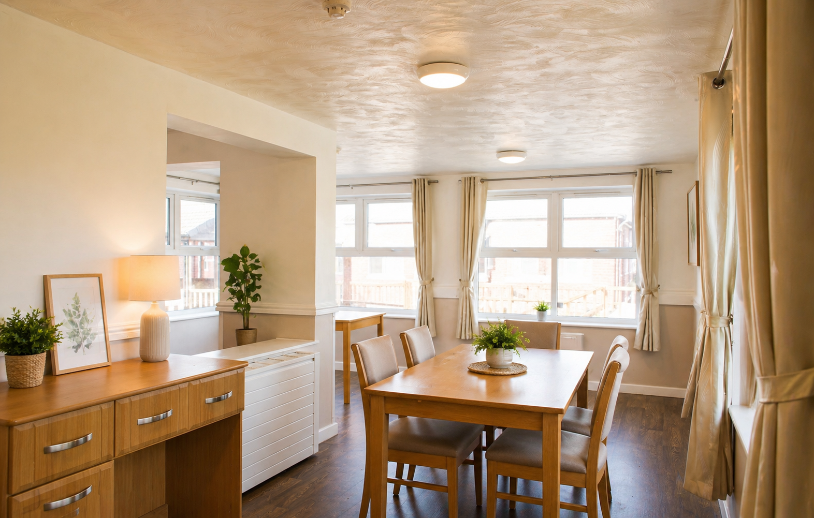
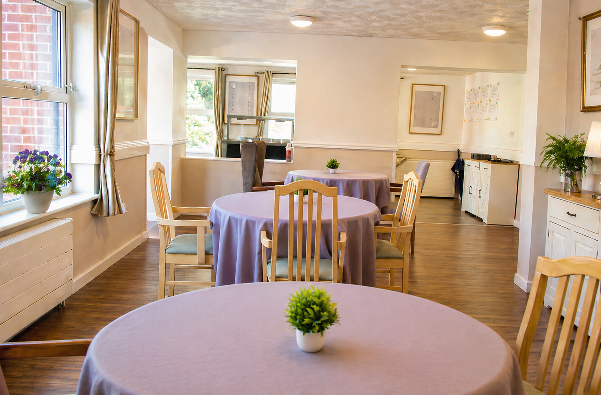
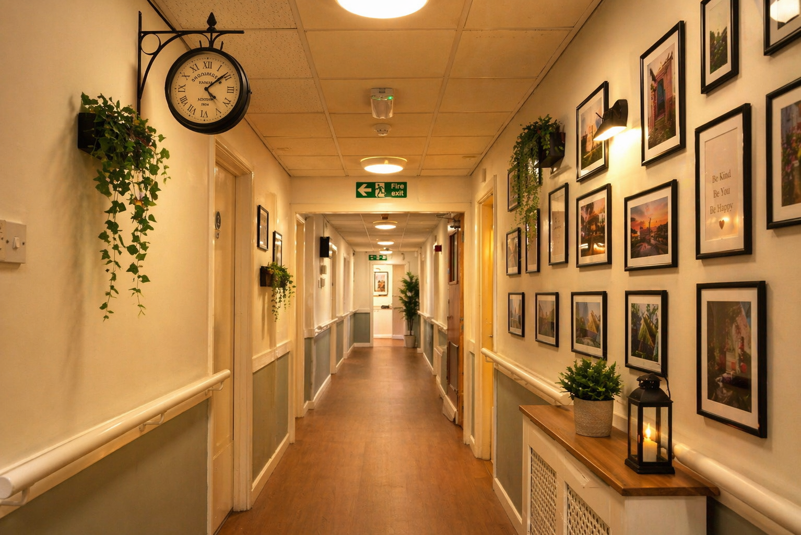
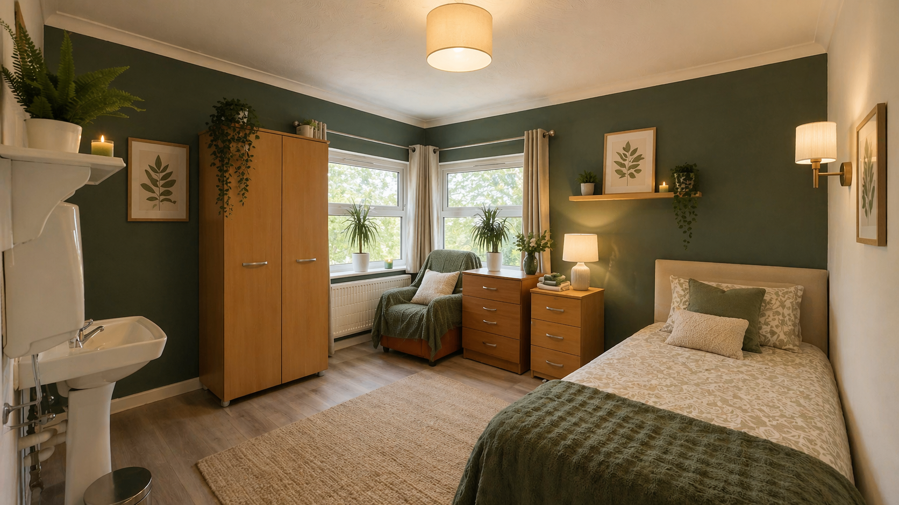

Inhouse Activities
Our dedicated activity team coproduce with residents, and deliver a range of activities to nourish body, mind and soul. We incorporate music, movement, art, pet therapy, sensory play, intergenerational play, outings, mental exercises, games and more to create a diverse offering encouraging activity and socialisation.
Overseen by the Wellbeing and Services Manager the team supports each individual to maintain a full and enriching life.
Join an Activity
Community Engagement
Having a sense of community and belonging is so important to our resident’s wellbeing and enjoying life to the full. Here at Pennine we offer a range of community focussed activities throughout the week.
These community led events include worship services, live entertainment, intergenerational play and pet therapy. We encourage our residents to stay connected to the local community, with both group outings and one-to-one trips to enjoy the local amenities. These activities are led by our Activities coordinator and overseen by the Wellbeing and Services Manager.

Nutrition & Hydration
Creating a balanced healthy and nutritious menu is important to us but we also provide meals that meet individual tastes and preferences. Ensuring that our residents eat meals that they enjoy is all part of providing a person-centred approach in all that we do, and this includes making sure that dietary requirements are met and that the food is wholesome, healthy and flavoursome.
There are snacks for those moments when the residents are peckish and a large range of drinks to encourage hydration. The Kitchen is staffed with a dedicated team who are well trained in catering for our residents.

Person Centred Care
All staff at Pennine are trained in person centred care. We believe that the residents are individuals and should be treated as such. From the moment we meet each resident we take every opportunity to build a trusting safe, sound, and supportive relationship with them. In doing so, we are able to understand their unique and individual preferences and ensure that they remain in the centre of all that we do with and for them.
From choice of décor to meal choices we engage with our residents and where possible their loved ones to ensure that their options are explored, and their voices heard and acted upon. As part of our commitment to Person Centred care, we welcome feedback from our residents, their loved ones and those who are involved in their care.

Family Partnerships
We actively encourage families to be involved in the life of their loved one. Here at Pennine, the Care Manager calls the family of the residents on a monthly basis to gain their views and opinions on the development of the plans around their care. There is a very informative newsletter that is produced regularly that help families to gain an insight into what is happening at Pennine.
Using Facebook, we have a private page that is dedicated to the families who give consent, where we post great images and updates on a regular basis to keep families updated on their loved ones journey at Pennine. There are regular family meetings led by the Wellbeing and Services Manager.

Innovative Care
The use of assistive technology has grown over time. This in no way replaces the human aspect of our work but enables us to deploy a range of technology to increase the level of detection and support in a less intrusive but useful way. We use nurse call systems, sensor mats and other technology as part of our person-centred care approach to meet the individual care and safety needs of residents.
We are continuously reviewing our use of technology and are building on our programme of introducing cutting edge technology to provide the best level of care possible.